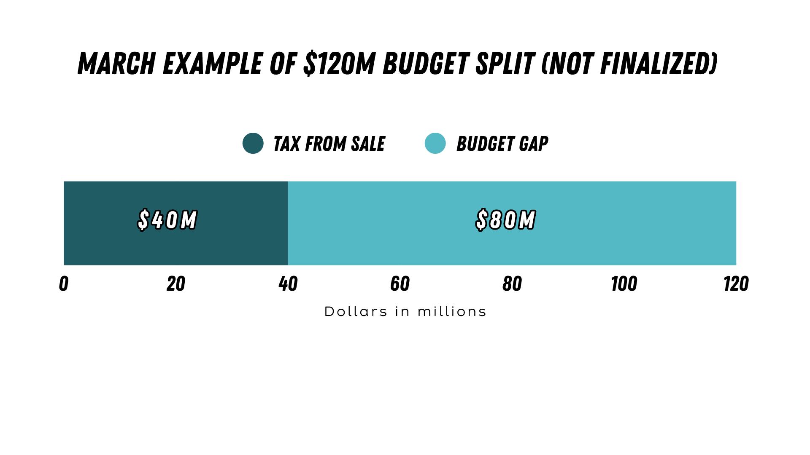

06 — City budget
How this impacts the city's budget
The $395M is a 20-year number. The more immediate question is how the city covers its $120M construction share between now and 2030. That's the part that actually strains a budget.

The city made $50M in taxes on the sale of the team itself, a one-time windfall separate from the renovation budget. Of that, $40M is earmarked to support the arena renovation, with the remaining $10M going toward ongoing operating and capital expenses for the arena. That $40M leaves an $80M gap in the $120M construction commitment to cover over the next four years. (Portland City Council memo, Mar 25, 2026)
Two ideas keep coming up for closing that gap: the Portland Clean Energy Fund (PCEF) and Prosper Portland. Neither can just hand over money on request; both have their own boards, and any funds would need to be approved for uses that actually fit each fund's charter. PCEF gets its own page, because there's more to it than a one-line mention deserves.